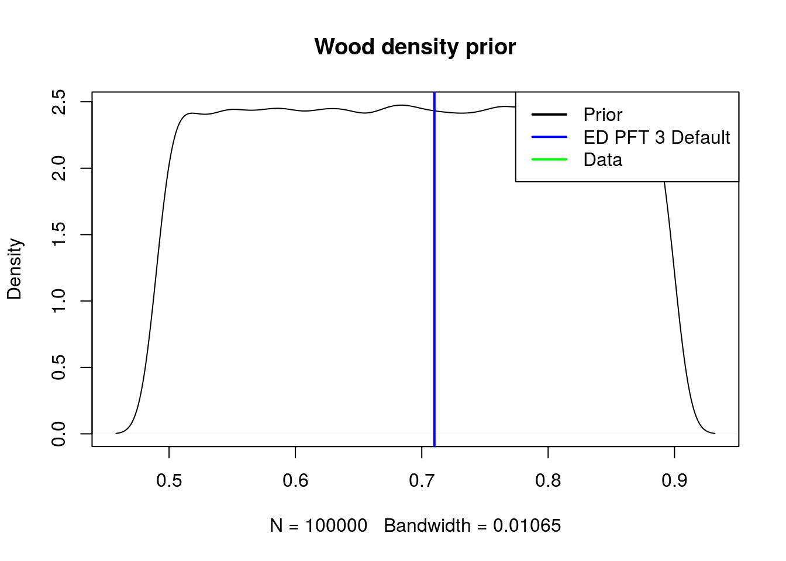
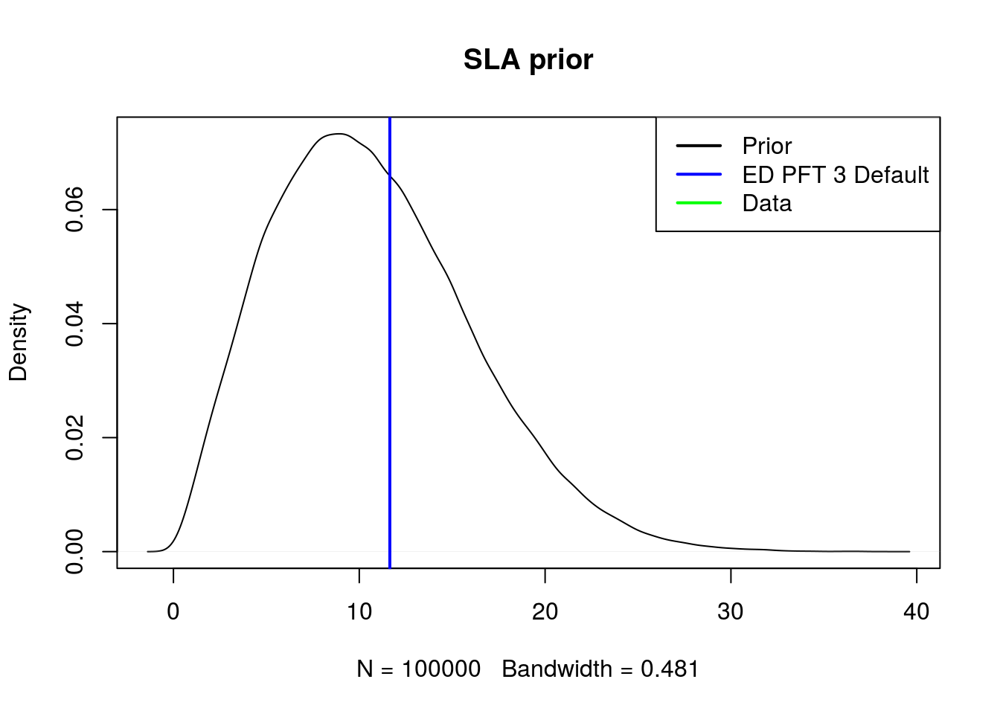

Chapter 2 Starting Parameters
2.1 Liquid water density
- ED variable name :
wdns - ED variable units:
kg/m3
wdns <- 1.000e3 # Liquid water density [kg/m3]2.2 Gravity
- ED variable name :
grav - ED variable units:
m/s2
grav <- 9.80665 # Gravity acceleration [m/s2]2.3 Conversion from MPa to m
- ED variable name :
MPa2m
MPa2m <- wdns / grav2.4 Wood density
- ED variable name :
rho - ED units:
g cm-3Note! Leaf density is calculated inkg cm-3because that makes perfect sense … - ED variable id: 1000000055
- FATES varaiable name:
WD
In the database, wood_density is unitless. So I’m assuming it can be directly mapped to our wood_density as such:
\[\frac{WD (gcm^{-2})}{\rho_w(gcm^{-2})} * \rho_w(gcm^{-2}) = \frac{WD (gcm^{-2})}{1(gcm^{-2})} * 1(gcm^{-2})\]
wood_density_fit <- tbl(bety, "priors") %>% filter(variable_id == 1000000055) %>% filter(id == 1000000281) %>% collect()
wood_density_prior <- rdistn(wood_density_fit)
default_wood_density <- get_ED_default(PFT3_defaults_history, "rho")
plot(density(wood_density_prior), main = "Wood density prior")
abline(v = default_wood_density, col = "blue", lwd = 2)
legend("topright",legend=c("Prior","ED PFT 3 Default","Data"), col=c("black", "blue", "green"), lwd=2)
2.5 Specific Leaf Area (SLA)
And subsequently \(LMA = (1/SLA)\)
- ED variable name :
SLA - ED variable id: 15
SLA_fit <- tbl(bety, "priors") %>% filter(variable_id == 15) %>% filter(id == 142) %>% collect()
# In this case, we are using prior_id = 142, this was chosen by someone else and maybe we'll revisit
SLA_prior <- rdistn(SLA_fit)
plot(density(SLA_prior), main = "SLA prior")
abline(v = get_ED_default(PFT3_defaults_history, "SLA"), col = "blue", lwd = 2)
legend("topright",legend=c("Prior","ED PFT 3 Default","Data"), col=c("black", "blue", "green"), lwd=2)